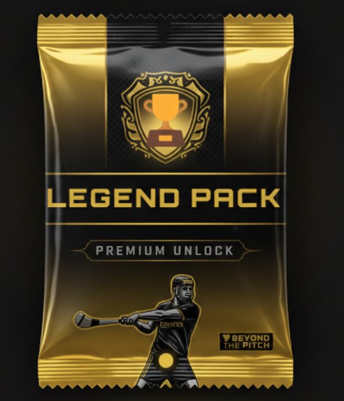

Gaelic Games Experience
The Most Unique Sports Experience in Ireland | Day Trip from Dublin
Step into the "Marble City" and master the skills of Hurling with local expert James and witness the legends live during an authentic Match Day Experience. The definitive day trip from Dublin to witness the fastest field game on earth.
New to Ireland or a local resident? Connect with our Dublin Community Initiative and turn strangers into friends.
When
Year-round (summer championship)
Where
Dublin, Kilkenny & rural communities
Group Size
Small intimate groups
Investment
Hurling experience: From €100: See Booking Schedule
The Tradition of Gaelic Football and Hurling
Gaelic Football and Hurling are at the core of Irish culture - ancient sports that have shaped the country's identity for thousands of years. Played in communities nationwide, they bring people together through shared passion, pride, and tradition.
For many Irish people, these games are not just sports - they are a powerful expression of who they are. With Beyond the Pitch, you'll experience Gaelic Games the way locals do: up close, passionate, and deeply connected to community life.
🍀 Why travel with us
You'll step beyond the pitch to feel the spirit, tradition, and energy that make Gaelic Games a defining part of Ireland. From championship matches to local club visits, we connect you with the heart of Irish sporting culture.

Interactive Challenge
MASTER THE GAMES?
Do you know your Sliotar from your Hurley? Prove your passion for the fastest field games on Earth!
Take the Gaelic Challenge →
Beyond the Pitch Interactive
Unlock a Legend
Step into the boots of an icon. Open your premium pack and discover which Hurling legend matches your spirit.
Open My Pack Now →
Meet James from Kilkenny
Your Hurling Expert
"Growing up in Kilkenny, hurling was a way of life. I love welcoming visitors who travel down from Dublin for the day or are on a round trip through Ireland; showing them that while the capital has the lights, Kilkenny has the soul of the game. I don’t just teach the skills; I pass on the 3,000 years of history that live in our streets."
The Ultimate Kilkenny Hurling Experience
Culture & Heritage
The Heart of rural Kilkenny
- Hosted in a traditional Irish pub in the beautiful village of Freshford/Kilkenny
- In-depth presentation on the history and evolution of the world's fastest field game
- Discover how Hurling became a core pillar of Irish identity and community life
- A perfect cultural introduction before heading into the pitch
Step Onto The Pitch
Master the skills for yourself
- Interactive on-field session led by expert local coaches
- Learn the fundamentals: the ground-stroke, hand-pass, solo-run, and hand strike
- Test your accuracy with shots at the goalposts
- Immerse yourself in the sport that has captivated Ireland for millennia
Match Day Immersion
Witness the legends in action
- Official match tickets included for a live Hurling fixture
- Watch the best of Ireland perform the skills you just learned at lightning speed
- Feel the electric atmosphere and pride of an authentic Irish stadium
- The ultimate conclusion to your Gaelic Games journey
Plan Your Journey
Check Availability
Select your preferred travel month. On the next page, you can choose a specific match and complete your booking.
★ Clinic includes expert coaching & pub presentation.
What's Included
Match Tickets
Seats for Gaelic Football or Hurling matches
Expert Local Guide
Passionate guide who knows Gaelic Games inside and out
GAA training session lead by our community heros
Experience the fastest game in the world yourself, by stepping up the pitch yourself
Traditional Meals
Irish cuisine, pub experiences, and cultural dining
Community Visits
Access to local GAA clubs and authentic interactions
Cultural Activities
Traditional music, heritage sites, and Irish storytelling
Experience Gaelic Games


Why This Journey
Community First
Gaelic Games are rooted in local clubs and communities. You won’t just attend matches - you’ll meet the people who live and breathe these sports every week.
Authentic Access
Through local connections, you gain access to clubhouses, matchday rituals, and conversations that most visitors never experience.
Sport as Identity
Gaelic Football and Hurling are more than sport - they are expressions of Irish identity, pride, and belonging passed down through generations.
Practical Information
Good to Know
- Season: Championship season runs mainly from May to August, with club matches year-round.
- Activity level: Light to moderate walking on matchdays and during city visits.
- Accommodation: Comfortable hotels or guesthouses in Dublin, Kilkenny, or regional towns (not included).
- Meals: Selected group meals included. Plenty of time to explore pubs and local food independently.
- Tickets: Match availability depends on the championship calendar and local fixtures.
What's Not Included
- Flights to and from Ireland
- Accommodation (recommendations provided)
- Travel insurance
- Meals not mentioned in the itinerary
- Personal expenses
Frequently Asked Questions
Ready to Experience Gaelic Games?
Join a journey where sport opens doors to Irish culture, community, and identity. Express your interest and receive full details about upcoming journeys.
BACK IN DUBLIN?
Our journey doesn't end on the pitch. Whether you're New in Town or a Local Resident, join our Dublin community hub where sport, culture, and connection live on.
Explore the Dublin Community